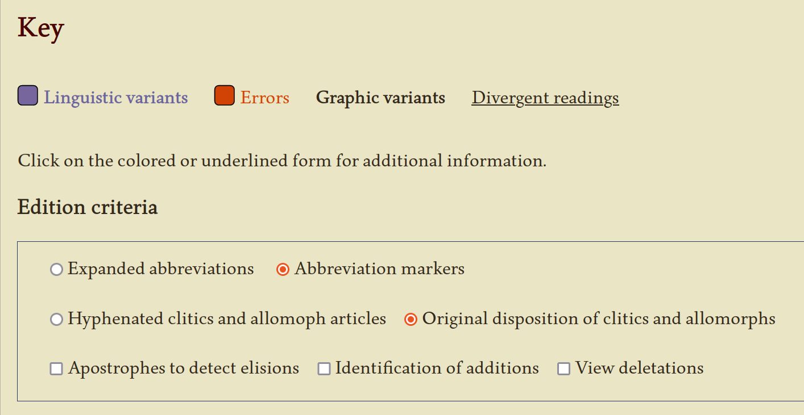
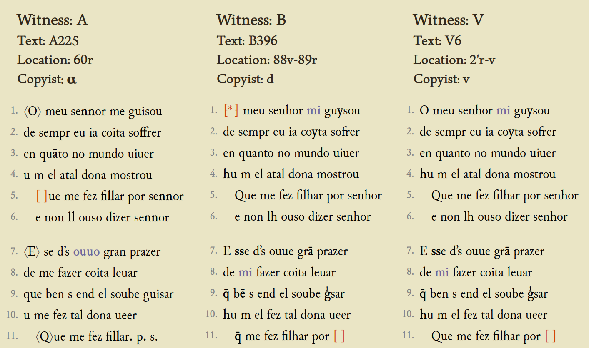
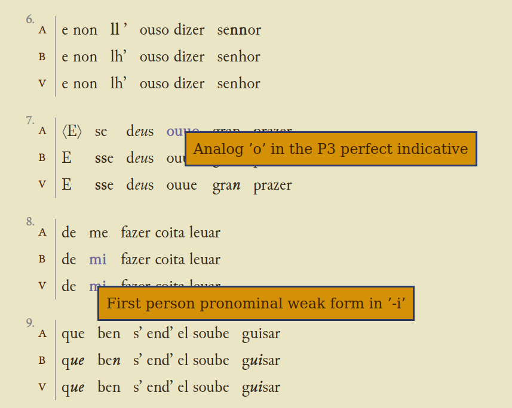
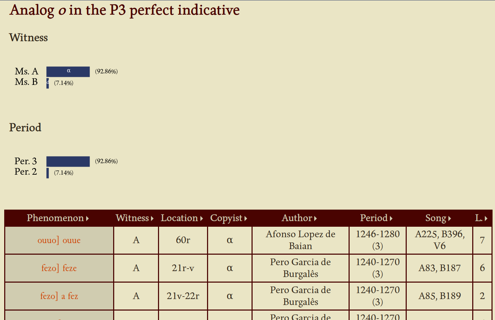

Digital-born editing models for Historical Linguistics studies
Helena Bermúdez Sabel
Mare Balticum Fellow 2023
Outline
- Rationale: digital scholarly editing, corpus-based research, and historical linguistics
- Data modelling and linguistically annotated digital editions
- An use case: a synoptic edition of Galician-Portuguese secular lyric
Rationale
Corpus-based approaches in Historical Linguistics
- Traditional predominance of example-selection approaches
- Availability of linguistic resources to carry out this
selection
- Historical dictionaries
- Catalogs and inventories of ancient texts
- Glossaries in scholarly editions
- Availability of linguistic resources to carry out this
selection
- Increase of corpus-based approaches in recent years
- Corpus development is easier due to
- Source availability
- Technological progress (automatized pipelines)
- Corpus development is easier due to
Specific challenges of historical & diachronic corpora
- Sources with different editorial criteria
- Coexistence of different orthographic conventions
- Linguistic variation
-
Editorial decisions (e.g. normalisation) might require
knowledge we don’t have yet
- E.g.: the representation of the new sounds in Romance languages
Data modelling
Why TEI-XML?
- Advantages for multi-level annotation. In
particular to annotate specific linguistic phenomena different from
the common Natural Language Processing (NLP) tasks
- Lemma, PoS, morphosyntactic description, dependence and constituent analysis, word sense disambiguation
- Vocabulary and encoding practises to tackle phenomena related to textual transmission
- Possibility to combine inline and stand-off annotation
Source of OLA: A Library of Annotated Latin Texts (Celano 2021-)
Source of OLA: A Library of Annotated Latin Texts (Celano 2021-)
PAULA examples from OLA: A Library of Annotated Latin Texts (Celano 2021-)
PAULA examples from OLA: A Library of Annotated Latin Texts (Celano 2021-)
PAULA examples from OLA: A Library of Annotated Latin Texts (Celano 2021-)

PAULA examples from OLA: A Library of Annotated Latin Texts (Celano 2021-)
PAULA examples from OLA: A Library of Annotated Latin Texts (Celano 2021-)
PAULA examples from OLA: A Library of Annotated Latin Texts (Celano 2021-)
How convenient is character offset-based stand-off annotation when working with historical texts?
Inline linguistic information in TEI
| att.linguistic provides a set of attributes concerning linguistic features of tokens, for usage within token-level elements, specifically w and pc in the analysis module. [17.4.2 Lightweight Linguistic Annotation] | |
| Module | analysis — Simple Analytic Mechanisms |
| Members | pc w |
Inline linguistic information in TEI
| lemma | provides a lemma (base form) for the word, typically uninflected and serving both as an identifier (e.g. in dictionary contexts, as a headword), and as a basis for potential inflections. |
<w lemma="Arznei">Artzeneyen</w> |
Inline linguistic information in TEI
| lemmaRef | provides a pointer to a definition of the lemma for the word, for example in an online lexicon. |
<w type="verb" lemma="hit" |
Inline linguistic information in TEI
| pos | (part of speech) indicates the part of speech assigned to a token (i.e. information on whether it is a noun, adjective, or verb), usually according to some official reference vocabulary (e.g. for German: STTS, for English: CLAWS, for Polish: NKJP, etc.). |
<s> |
Inline linguistic information in TEI
| msd | (morphosyntactic description) supplies morphosyntactic information for a token, usually according to some official reference vocabulary (e.g. for German: STTS-large tagset; for a feature description system designed as (pragmatically) universal, see Universal Features). |
<ab> |
Inline linguistic information in TEI
| join | when present, provides information on whether the token in question is adjacent to another, and if so, on which side. |
<s> |
Feature structures: definition
- A group of attribute:value pairs, in which the values may be either atomic or composed by complex units in the form of nested feature structures
Feature structures: example
<fs type="phonological_segments">
<f name="consonantal">
<binary value="true"/>
</f>
<f name="vocalic">
<binary value="false"/>
</f>
<f name="voiced">
<binary value="false"/>
</f>
<f name="anterior">
<binary value="true"/>
</f>
<f name="coronal">
<binary value="true"/>
</f>
<f name="continuant">
<binary value="true"/>
</f>
<f name="strident">
<binary value="true"/>
</f>
</fs>
Feature structures: example
<fs type="word">
<f name="surface">
<string>love</string>
</f>
<f name="syntax">
<fs type="category">
<f name="pos" fVal="#V"/>
<f name="val" fVal="#TRNS"/>
</fs>
</f>
<f name="semantics">
<fs type="act">
<f name="rel" fVal="#LOVE"/>
</fs>
</f>
</fs>
Feature structures: definition
- A group of attribute:value pairs, in which the values may be either atomic or composed by complex units in the form of nested feature structures
- It stems from the structuralist framework of the Prague school and later developments
- It can be considered a general type of data structure
Feature structures (FS): advantages
- Reusability mechanisms (e.g. shared features)
Feature structures (FS): advantages
- Reusability mechanisms (e.g. shared features)
- Means to document the implementation of a FS model
in a structured way through the Feature System Declaration (FSD)
- Mechanism to define a well-formed and valid feature structure, formalising its necessary components together with other types of constraints, and declaring all the feature names and values
Feature System Declaration: example
Feature structures (FS): advantages
- Reusability mechanisms (e.g. shared features)
- Means to document the implementation of a FS model in a structured
way through the Feature System Declaration (FSD)
- Mechanism to define a well-formed and valid feature structure, formalising its necessary components together with other types of constraints, and declaring all the feature names and values
- Straightforward transformation to other data modals (e.g. RDF)
- Adoption as an ISO Standard
Implementation example
Digital workstation for the analysis of linguistic variation across witnesses
| Goals | Methods |
|---|---|
| Gain new knowledge about the Galician-Portuguese lyric manuscript tradition from the systematic analysis of linguistic variation phenomena between witnesses |
|

The manuscript tradition
Metadata for each cantiga
- Author
- For each witness
- Location in the manuscript
- Copyist
Author metadata
- Name
- “Nationality”
- Geographic provenance
- Troubadour or minstrel
- Social status (e.g. nobleman, knight, clergyman, squire)
-
floruit
- period
- location (court)
Encoding of variants
- Every locus of variation is encoded using the parallel-segmentation method
Encoding of variants
- Every locus of variation has a reference to an entry (FS) of a variant taxonomy
Data retrieval and exploitation
Data retrieval and exploitation
Data retrieval and exploitation
Data retrieval and exploitation
Final remarks
Conclusions
- Although “pure” stand-off annotation methods present multiple advantanges for adding layers of linguistic annotation, it might not always be the most appropriate technique
- Stand-off through URIs instead of character off-sets
- Feature structures as a data model to formalise different and heterogeneous linguistic phenomena